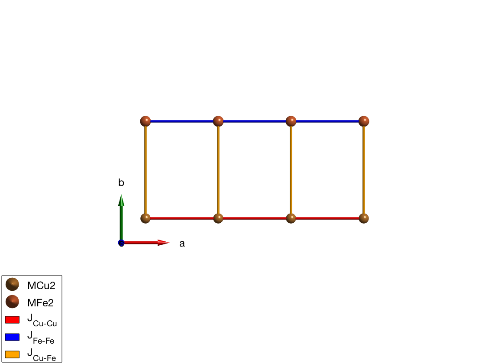
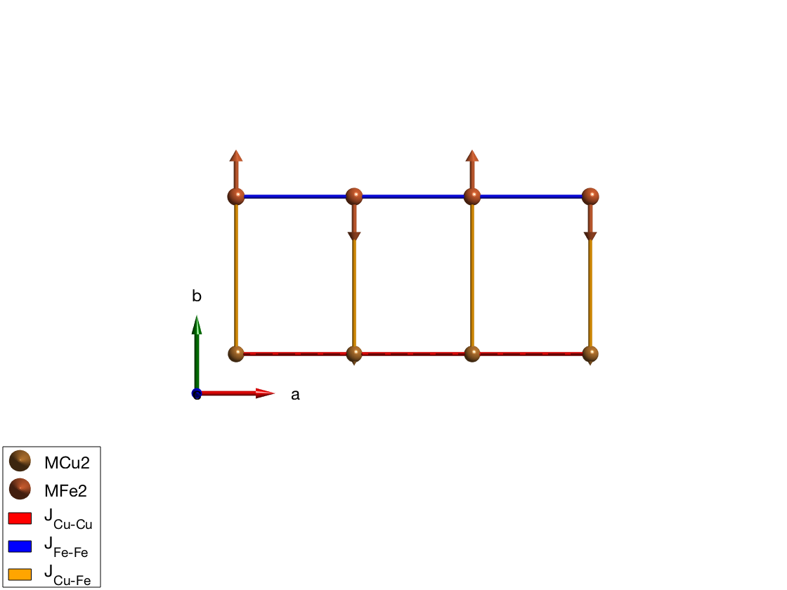
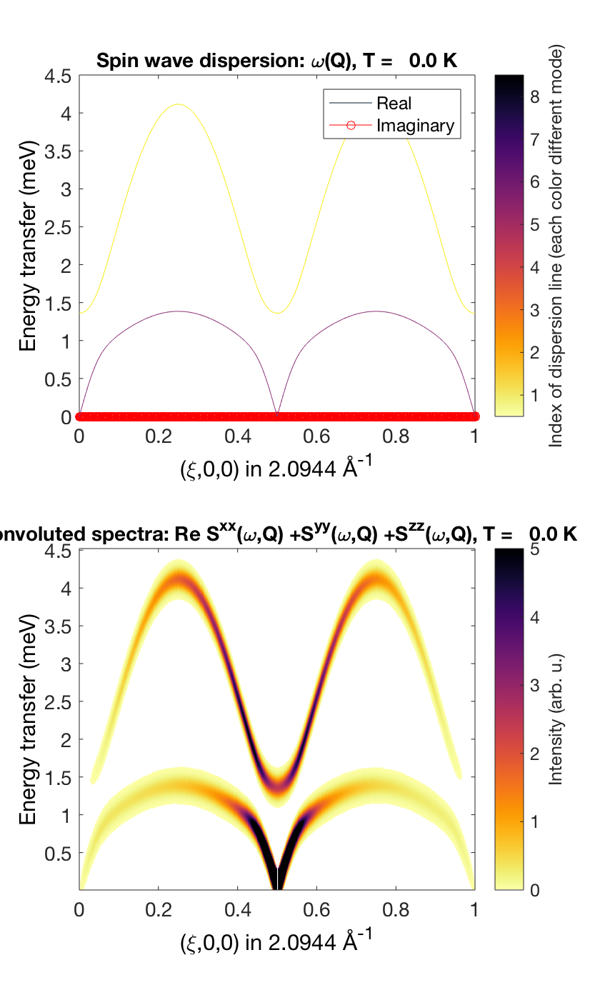
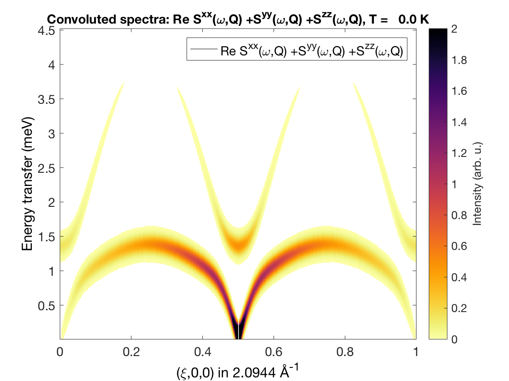

Spin-spin correlation function of two different coupled magnetic ion
In this tutorial, we demonstrate how the spin wave spectrum of two different coupled ion can be calculated. Using the magnetic form factor, the spin-spin correlation function on the two ions can be separated. This method is also usefull for simulating RIXS (Resonant Inelastic X-ray Scattering) on spin waves, that typically measures only the spin waves on the resonant ion.
Contents
Cu and Fe chain
We define a unit cell with an Fe2+ and Cu2+ ions, the size of the spin is determined by the code using the information stored in the ion.dat file. We couple antiferromagnetically the Fe and Cu atoms in separate chains running along the a-axis. The chains are weakly coupled along the b-axis.
FeCuChain = spinw; FeCuChain.genlattice('lat_const',[3 8 4],'spgr','P 1') FeCuChain.addatom('label','MCu2','r',[0 0 0]) FeCuChain.addatom('label','MFe2','r',[0 1/2 0]) FeCuChain.gencoupling FeCuChain.addmatrix('label','J_{Cu-Cu}','value',1,'color','r') FeCuChain.addmatrix('label','J_{Fe-Fe}','value',1,'color','b') FeCuChain.addmatrix('label','J_{Cu-Fe}','value',-0.1,'color','orange') FeCuChain.addcoupling('mat','J_{Cu-Cu}','bond',1) FeCuChain.addcoupling('mat','J_{Fe-Fe}','bond',2) FeCuChain.addcoupling('mat','J_{Cu-Fe}','bond',[4 5]) plot(FeCuChain,'range',[3 0.7 1],'cellMode','none')
Define magnetic structure
The classical ground state of the above define Hamiltonian is antiferromagnetic chains ordered ferromagnetically along the b-direction. Here we define a magnetic unit cell that is 2x1x1 of the crystal unit cell to incorporate the antiferromagnetic structure.
FeCuChain.genmagstr('mode','helical','S',[0 0;1 1;0 0],'k',[1/2 0 0]) FeCuChain.genmagstr('mode','helical','nExt',[2 1 1]) plot(FeCuChain,'range',[3 0.7 1],'maglHead',0.3)
Spin-spin correlation function including the form factor
We calculate the spin wave intensity (withouth the polarisation factor) and include the magnetic form factor of both the Cu2+ and Fe2+. The magnetic form factor is automatically assigned to the ions based on the given labels in the spniw.addatom() method. The magnetic form factor is applied to the calculated spin-spin correlation funcion in the spinw.spinwave() function, when the 'formfact' option is set to true. The spin wave dispersion plot includes the imaginary part of the spin wave energies as well (plotted as red dots) to check that the magnetic ground state is right.
spec = FeCuChain.spinwave({[0 0 0] [1 0 0] 501},'formfact',true,'hermit',false);
spec = sw_egrid(spec,'component','Sxx+Syy+Szz');
figure
subplot(2,1,1)
sw_plotspec(spec,'mode','disp','imag',true,'axLim',[0 4.5])
subplot(2,1,2)
sw_plotspec(spec,'mode','color','dE',0.2)
legend off
swplot.subfigure(1,3,1)
 Copper only correlations
To see only the spin-spin correlations on the Cu2+ ions, we can change the form factor of the Fe ions to zero. To do this, we can use the spinw.addatom() function, giving a new form factor setting the 'formfactn' option to 0. The spinw.addatom() method updates properties of existing atoms that have the label and position identical to the given one. The 'formfactn' option can be also used to give the value of the form factor as a vector with 9 or 11 numbers. As the resulting plot shows, the upper branch comes from mostly the Fe2+ chain. This is resonable, since the spin wave energy is ~J*S and the Fe2+ ions have larger S. There is also a small mixing around the zone center and boundaries due to the weak J_{Cu-Fe} coupling.
FeCuChain.addatom('label','MCu2','r',[0 0 0],'formfactn',1) FeCuChain.addatom('label','MFe2','r',[0 1/2 0],'formfactn',0) spec = FeCuChain.spinwave({[0 0 0] [1 0 0] 503},'hermit',false,'formfact',true); spec = sw_egrid(spec,'component','Sxx+Syy+Szz'); figure sw_plotspec(spec,'mode','color','dE',0.2)
Iron only correlations
By exchanging the form factor values between Cu and Fe, the spin-spin correlations on the Fe ions are plotted. It is clearly visible, that the goldstone mode at (1/2,0,0) has a strong Fe2+ component as well.
FeCuChain.addatom('label','MCu2','r',[0 0 0],'formfactn',0) FeCuChain.addatom('label','MFe2','r',[0 1/2 0],'formfactn',1) spec = FeCuChain.spinwave({[0 0 0] [1 0 0] 500},'formfact',true); spec = sw_egrid(spec,'component','Sxx+Syy+Szz'); figure sw_plotspec(spec,'mode','color','dE',0.2)
Warning: To make the Hamiltonian positive definite, a small omega_tol value was added to its diagonal!

Reduced moments
The size of the reduced moment due to the zero point energy of the spin waves can be calculated as well. The calculated momen reduction is finite, that shows that within the spin wave approach, the 2D coupled plane of Heisenberg spins at zero temperature is ordered. The moment reduction is much larger on the spin-2 Fe ion (dS = 0.577) than on the spin-1/2 (dS = 0.137) Cu ions. This is due to the fact, that for the Fe ions the interchain coupling is much weaker than the chain coupling, this leads to large moment reduction, while the Cu ions the interchain coupling is much larger relative to the intrachain exchange.
Red = FeCuChain.moment('nRand',1e5)
dM = repmat(FeCuChain.matom.S,1,prod(FeCuChain.magstr.N_ext)) - Red.moment
Red =
struct with fields:
moment: [0.3649 1.4304 0.3649 1.4304]
obj: [1×1 spinw]
T: 0
nRand: 100000
dM =
0.1351 0.5696 0.1351 0.5696
Written by Sandor Toth 02-Sep-2014, 06-Feb-2017